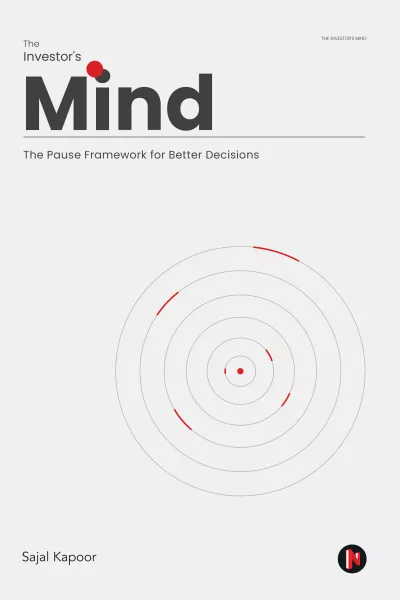

萨贾尔·卡普尔（Sajal Kapoor）是一位拥有多年跨境投资经验的基金经理，长期致力于将认知科学与投资决策过程相结合。《投资者的心智》围绕他所提出的"暂停框架"（Pause Framework）展开，这一框架的核心主张是：在信息过载与情绪干扰日益严重的市场环境中，投资者最需要培养的能力，不是更快地做出反应，而是在关键时刻主动制造停顿，让理性评估得以介入。
卡普尔在书中系统梳理了影响投资判断的认知层障碍，包括确认偏见、近期性偏差、叙事谬误以及对不确定性的本能逃避。他的论点是，这些偏误并非可以依靠意志力克服的个人缺陷，而是人类神经系统在高压与不确定情境下的默认反应——它们在进化上曾经有用，但在现代金融市场中会系统性地损害决策质量。暂停框架的设计逻辑，正是在这些触发点前建立一道结构性的缓冲机制，迫使决策者在行动前完成一套明确的核查流程。
书中将暂停框架与商业的不确定性、期权性思维（optionality）以及反脆弱（anti-fragile）的投资视角相结合，探讨如何在面对复杂、多变的商业环境时，将"暂停"转化为更具建设性的分析动作，而非简单的拖延。卡普尔尤其重视跨学科视角的引入——他援引认知心理学、行为经济学以及系统论中的洞见，试图为投资决策提供一套更具韧性的思维底层结构。对于长期从事主动管理、或正在建立自身投资哲学的从业者而言，这本书提供的不是选股技术，而是一种关于"如何思考"本身的元认知训练。
《投资者的心智》的价值在于它将抽象的决策科学落地为可操作的投资实践。暂停框架既不依赖于特定的市场风格，也不限于某类资产类别，而是作为一种通用的认知纪律，适用于任何需要在不确定性中做出高质量判断的场景。在投资者行为研究日趋成熟的今天，这本书提供了一个有别于传统量化分析或基本面研究的补充视角——提醒读者，理解自己的思维缺陷，与理解市场的定价机制同等重要。